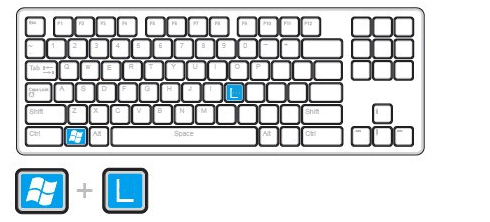
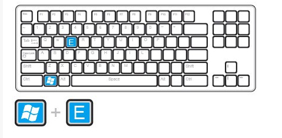
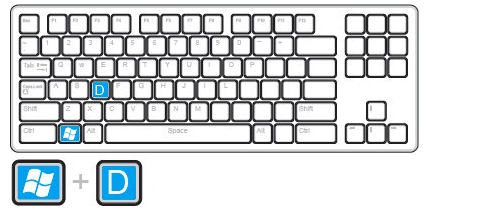
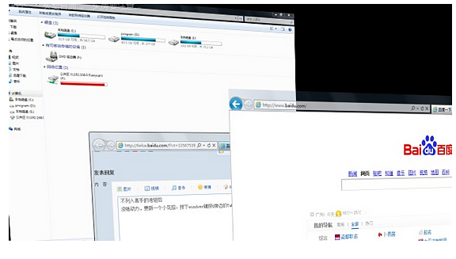
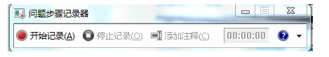
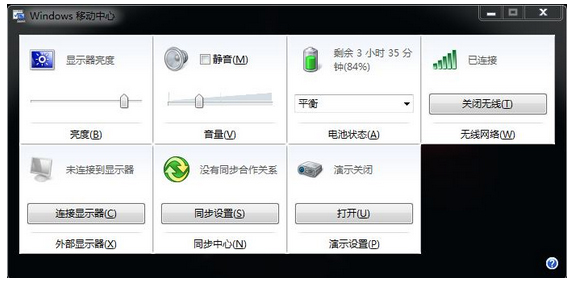
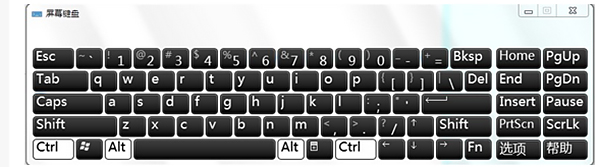
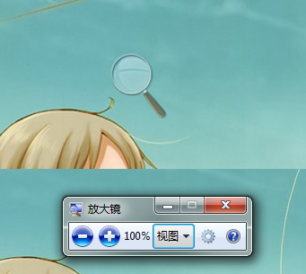

本篇为大家奉上电脑键盘上你所不知道的“秘密”，让你在电脑前像那些高手、达人一样，使用各种常用功能的快捷组合键。从此工作效率倍增，白领必备！
【财新网·Enjoy】
1.很多时候，需要暂时离开座位去做别的事情，如果对自己的电脑安全很重视，不妨按住windows键后，再按L键，这样电脑就直接锁屏了，这样就不用担心电脑的资料外泄啦。

2.要找电脑上的文件时，一般人会先找到“我的电脑”，然后点击打开，而高手总是很酷的，轻轻按下键盘上的Windows键不放然后再按E键，直接打开电脑的资源管理器，而一般人还在慢慢寻找“我的电脑”的图标呢，嗯，高手就是这样直接把一般人给秒杀了的。

3. 正在玩游戏或看羞羞的东西的时候，Boss进来了！鼠标一下子点不到右下角的显示桌面，怎么办，怎么办？别紧张！直接按下Windows键和D键，看，桌面闪现！

4.一个小花招，蛮炫的。 按下windows键按后再按Tab键，可以以3D效果显示切换窗口。

5.windows自带的录像功能。按下windows键+R，输入psr.exe回车，然后就可以开始记录了。

6.你知道怎样一次过调整显示器亮度、音量大小，打开无线网，还能够看到本本电池电量吗？把本本的画面放到电视上，已经连好线了，需要怎么设置？小case啦，想要这些功能，你只需要按下Windows键+X，一次性满足你的所有愿望啦！

7.Windows + R输入osk，出现炫酷虚拟键盘！你按下一个键，它也会同样显示出来按下的状态喔！

8.图片太小，眼神不好使咋办？ 试试windows键和+++++++++，放大镜出现！

9. 现在很多程序，比如QQ，IE，都是在同一个窗口里面打开几个页面。用Ctrl+Tab，可以在几个页面之间互相切换。用Ctrl+w，可以关闭当前的页面。
10.按下windows键不放，再按下Fn，再按下Home，你就可以打开系统属性了。（其实用鼠标在我的电脑上面右键-属性也一样，不过不觉得用键盘操作更帅嘛！）
11.shift + 任务栏的窗口图标 = 新建一个该窗口：
Ctrl+S 保存；
Ctrl+W 关闭程序；
Ctrl+N 新建；
Ctrl+O 打开；
Ctrl+Z 撤销；
Ctrl+F 查找；
Ctrl+X 剪切；
Ctrl+C 复制；
Ctrl+V 粘贴；
Ctrl+A 全选；
Ctrl+[ 缩小文字；
Ctrl+] 放大文字；
Ctrl+B 粗体；
Ctrl+I 斜体；
Ctrl+U 下划线；
Ctrl+Shift 输入法切换；
Ctrl+空格 中英文切换；
Ctrl+回车 QQ号中发送信息；
Ctrl+Home 光标快速移到文件头；
Ctrl+End 光标快速移到文件尾；
Ctrl+Esc 显示开始菜单；
Ctrl+Shift+ 快速缩小文字；
Ctrl+Shift+ 快速放大文字；
Ctrl+F5 在IE中强行刷新；
Ctrl+拖动文件 复制文件；
Ctrl+
Backspace 启动关闭输入法；
拖动文件时按住Ctrl+Shift 创建快捷方式。
Alt+空格+C 关闭窗口；
Alt+空格+N 最小化当前窗口；
Alt+空格+R 恢复最小化窗口；
Alt+空格+X 最大化当前窗口；
Alt+空格+M 移动窗口；
Alt+空格+S 改变窗口大小；
Alt+Tab 两个程序交换；
Alt+255 QQ号中输入无名人；
Alt+F 打开文件菜单；
Alt+V 打开视图菜单；
Alt+E 打开编辑菜单；
Alt+I 打开插入菜单；
Alt+O 打开格式菜单；
Alt+T 打开工具菜单；
Alt+A 打开表格菜单；
Alt+W 打开窗口菜单；
Alt+H 打开帮助菜单；
Alt+回车 查看文件属性；
Alt+双击文件 查看文件属性；
Alt+X 关闭C语言。
Shift快捷键：
Shift+空格 半全角切换；
Shift + Delete 永久删除所选项，而不将它放到“回收站”中。
拖动某一项时按 CTRL 复制所选项。拖动某一项时按 CTRL + SHIFT 创建所选项目的快捷键。
WORD全套快捷键小技巧：
CTRL+O 打开；
CTRL+P 打印；
CTRL+A 全选；
CTRL+[/] 对文字进行大小设置（在选中目标情况下）；
CTRL+D 字体设置（在选中目标情况下）；
CTRL+G/H 查找/替换；
CTRL+N 全文删除；
CTRL+M 左边距（在选中目标情况下）；
CTRL+U 绘制下划线（在选中目标情况下）；
CTRL+B 加粗文字（在选中目标情况下）；
CTRL+I 倾斜文字（在选中目标情况下）；
CTRL+Q 两边对齐（无首行缩进），（在选中目标情况下）或将光标放置目标文 字的段尾，亦可操作；
CTRL+J 两端对齐（操作同上）；
CTRL+E 居中（操作同上）；
CTRL+R 右对齐（操作同上）；
CTRL+K 插入超链接；
CTRL+T/Y 可进行首行缩进（将光标移到需做此操作的段尾，或将此段选中进行操作；
Ctrl+A（或Ctrl+小键盘上数字5）：选中全文。
Ctrl+B：给选中的文字加粗（再按一次，取消加粗）。
Ctrl+C：将选中的文字复制到剪贴板中。
Ctrl+D：打开“字体”对话框，快速完成字体的各种设置。
Ctrl+E：使光标所在行的文本居中。
Ctrl+F：打开“查找与替换”对话框，并定位在“查找”标签上。
Ctrl+G：打开“查找与替换”对话框，并定位在“定位”标签上。
Ctrl+H：打开“查找与替换”对话框，并定位在“替换”标签上。
Ctrl+I：使选中的文字倾斜（再按一次，取消倾斜）。
Ctrl+K：打开“插入超链接”对话框。
Ctrl+Shift+L：给光标所在行的文本加上“项目符号”。
Ctrl+M：同时增加首行和悬挂缩进。
Ctrl+Shift+M：同时减少首行和悬挂缩进。
Ctrl+N：新建一个空文档。
Ctrl+O（或Ctrl+
F12）：打开“打开”对话框。
Ctrl+P（或Ctrl+Shift+F12）：打开“打印”对话框。
Ctrl+R：使光标所在行的文本右对齐。
Ctrl+S：为新文档打开“另保存为”对话框，或对当前文档进行保存。
Ctrl+T：增加首行缩进。
Ctrl+Shift+T：减少首行缩进。
Ctrl+U：给选中的文字加上下划线（再按一次，去年下划线）。
Ctrl+V：将剪贴板中的文本或图片粘贴到光标处。若剪贴板中有多个内容，则将最后一条内容粘贴到光标处。
Ctrl+X：将选中的文字剪切到剪贴板中。
Ctrl+Z：撤销刚才进行的操作（可以多次使用）。
Ctrl+0：将选中的文本每段前增加12磅的间距。
Ctrl+1：若选中的文本行距不是“单倍行距”，则将其快速设置为“单倍行距”。
Ctrl+2：将选中的文本行距设置为“两倍行距”。
Ctrl+5：将选中的文本行距设置为“1.5倍行距”。
Ctrl+F2：快速执行“打印预览”功能。
Ctrl+F4：关闭当前文档。
Ctrl+F5：使窗口还原到最大化之前的状态。
Ctrl+Shift+F5：打开“书签”对话框。
Ctrl+Shift+F8：激活列选择功能，即通常所说的选择竖块文本（再按一次或按ESC键，取消该功能）。
Ctrl+F9：在光标处插入一域记号“{}”（注意：直接输入的一对大括号不能作为域记号）。
Ctrl+F5：使窗口还原到最大化之前的状态（再按一次，就会使窗口再次最大化）。
Ctrl+Deltet：删除光标后面的一个英文单词或一个中文词语（可反复使用）。
Ctrl+退格键：删除光标前面的一个英文单词或一个中文词语（可反复使用）。
Ctrl+Enter：将光标后面的内容快速移到下一页。
Ctrl+End：快速将光标移到文末。
Ctrl+Home（或Ctrl+PageUp）：快速将光标移到文首。
Ctrl+Insert+Insert(即按两下Insert键)：快速打开或更改“任务窗格”到“剪贴板”状态。
Ctrl+~：打开中文输入法的“在线造词”功能。
Ctrl++：快速切换到下标输入状态（再按一次恢复到正常状态）。
Ctrl+Shift++：快速切换到上标输入状态（再按一次恢复到正常状态）。
Ctrl+→：按英文单词或中文词语的间隔向后移动光标。
Ctrl+←：按英文单词或中文词语的间隔向前移动光标。
Ctrl+J：文本两端对齐；
Ctrl+L：文本左对齐；
Ctrl+Q：段落重置；
Ctrl+W：关闭当前文档；
Ctrl+Y：重复上一操作（部分操作不适用-winkey+d:这是高手最常用的第一快捷组合键。这个快捷键组合可以将桌面上的所有窗口瞬间最小化，无论是聊天的窗口还是游戏的窗口,只要再次按下这个组合键，刚才的所有窗口都回来了，而且激活的也正是你最小化之前在使用的窗口！)■